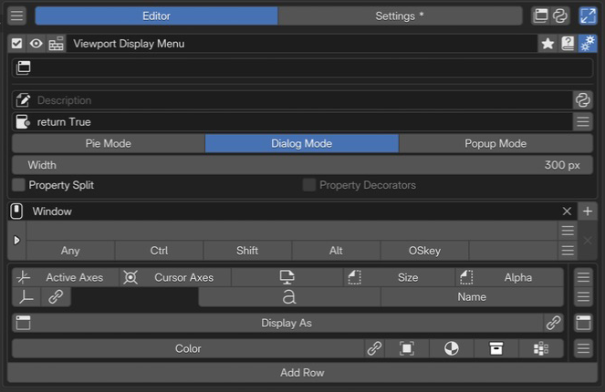
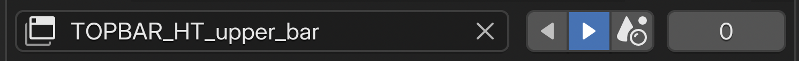
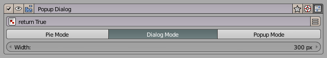
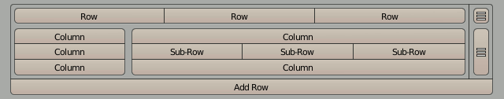
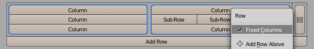
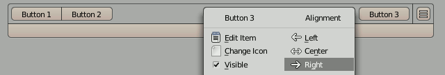
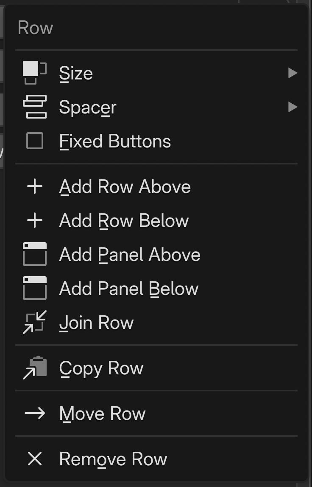
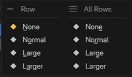

Pop-up Dialog Editor¶
Pop-up Dialog は、ボタン・プロパティ・スライダー・チェックボックスを行と列で組み立てた小さな UI パネルを、その場でポップアップとして表示するエディターです。Pie Menu や Regular Menu と異なり、レイアウトを自分で構成できます。
構成ガイド — 機能・組み合わせ・活用例（AI 向け）
呼び名：Popup Dialog／種別 ID：DIALOG。 行・列に操作と設定をまとめ、ダイアログやポップアップとして表示します。Command / Property / Menu / Hotkey / Custom を使い、行・列を追加して構成します。
割り当て：Property は RNA パスによる設定ウィジェット、Command は操作を実行する Python、Custom は Blender の
UILayoutを使う描画コードです。Menu の組み合わせ：別のメニューを開くほか、Regular Menu / Popup Dialog を展開できます。Property / Property Stack の参照は設定ウィジェットの配置です。
配置：ホットキーから開く／Pie Menu の中へ展開する／既存の Panel・Header へ差し込む。展開先の幅・位置は、参照するスロット側の設定と区別します。
設計：レイアウトの行・列と、ポップアップの Mode を分けて決めます。画面が開くことと、そのコンテキストでボタンが実行できることは別に確認します。
行と列は レイアウト、差し込みは Extend Target、表示の設定は Advanced settingsへ。
画面と編集の流れ¶

1名前と基本操作編集対象の名前と有効状態を確認し、プレビューや詳細設定を開きます。 2Extend Target既存のパネルやヘッダーへの差し込み先を指定します。この例は未指定です。 3Advanced settings説明、利用条件、表示モード、幅、プロパティの配置を設定します。 4Keymap / Hotkey呼び出す場所とキーを設定します。 5メニュースロット表示設定を行と列にまとめます。各行と項目の右端から編集操作を選びます。名前と利用条件、呼び出し方を設定し、スロットでメニューの内容を組み立てます。
名前と基本操作¶
有効状態、プレビュー、選択メニュー、名前、タグ、ドキュメント、詳細設定の操作です。各ボタンは 選択メニューの設定を参照してください。
Keymap / Hotkey¶
使う場所を Keymap、起動キーと修飾キーを Hotkey で設定します。Open Mode は開くタイミングです。入力欄は 共通の Hotkey 設定を参照してください。
Extend Target¶
{kind=link}

TOPBAR_HT_upper_bar を差し込み先に指定した例。¶
トップバー直下にあり、Blender の既存パネル / ヘッダーにこの Pop-up Dialog を差し込むための行です。
Added in version 2.0.0: Extend Panel / Extend Header を再設計し、同じ Target に複数の Pop-up Dialog / Regular Menu を重ねられるようになりました。
- Extend Target:
差し込み先の Blender クラス ID。検索付きで、Interactive Panels の Copy Panel ID で取得した文字列をそのまま貼り付けできます。未指定の場合は通常の hotkey 呼び出し型として動作します。
- Side:
差し込み位置。Prepend は先頭、Append は末尾に追加します。画像では左右の三角ボタンで選びます。
- R:
Target が
TOPBAR_HT_の場合に限り表示され、TOPBAR ヘッダーの右リージョンに差し込むかを切り替えます。- Order:
同じ Target に複数のメニューが差し込まれている場合の表示順。値が小さいほど先に描画されます。
差し込み手順の詳細は Interactive Panels と Extend Panel を参照してください。
Advanced settings¶
Description と Poll は、説明文と利用条件の設定です。Python による動的な説明も使えます。共通の 詳細設定を参照してください。
Added in version 2.1: Property Split でラベルと入力欄を整列できます。メニュー全体の設定に加え、項目ごとの切り替えも使えます。
Property Split はプロパティ名と値を分けて表示し、Property Decorators はアニメーションに関する装飾表示を設定します。
表示モード¶

ポップアップの見た目と閉じ方を 3 つのモードから選びます。
モード |
Pie |
Dialog |
Popup |
|---|---|---|---|
マウスをポップアップ外に移動すると閉じる |
❌ |
❌ |
✅ |
ポップアップ内のウィジェットを操作すると閉じる |
✅ |
❌ |
❌ |
OK ボタン |
❌ |
✅ |
❌ |
移動可能 |
❌ |
✅ |
✅ |
幅をカスタマイズ可能 |
❌ |
✅ |
✅ |
レイアウト¶
Blender の行と列のレイアウトシステムをそのまま使い、Pop-up Dialog の UI を組み立てます。
スロットはボタンやプロパティなどのウィジェットになります。行を列に分け、必要に応じてサブ列・サブ行を追加します。スロットの追加・削除・並び替えは、ポップアップの見た目に反映されます。

エディタ上では、行に対して列を設定し、必要に応じてサブ列とサブ行を追加していきます。
サブ列を追加するには、いずれかのボタンで LMB を押してメニューを開き、Column セパレータを選択します。サブ列にさらにサブ行を追加するには、メニューにある Begin Subrow と End Subrow を使います。
Custom スロットで Python のレイアウト API を直接書けば、デフォルトのボタンの代わりに任意のウィジェットを描画できます。
行・列を組み合わせた配置の参考に、原作者 roaoao の動画を紹介します。旧版の UI ですが、複雑なレイアウトを組み立てる流れを確認できます。
Popup Dialog with Complex Layout
レイアウトを親ポップアップに展開する¶

別の Pie Menu や Pop-up Dialog のスロットからこの Pop-up Dialog を呼んだとき、独立ポップアップとして開くか、呼び出し元のメニューにレイアウトを展開するかを選べます。呼び出し元側で Menu タブの Expand Popup Dialog を有効にすると、展開動作になります。
固定列¶

Fixed Columns を有効にすると、列幅を揃えます。ピクセル数を指定する設定ではありません。
配置¶

行に列がない（行を分割していない）場合、その行内のボタンの水平方向の配置を左寄せ / 中央 / 右寄せから選べます。
パネルの組み込みとリンク操作¶
Added in version 2.0.5: 折りたたみパネルと、エディターのリンクボタンの表示設定が追加されました。パネルの組み込みには Blender 4.2 以降が必要です。
A. Panel Row — 別の Pop-up Dialog を、開閉できるパネルとして組み込みます。「Display As」がパネルの中身として参照するダイアログです。本文から 参照先や初期状態、右端のパネルアイコンから 行全体の操作を設定します。
B：通常の Menu スロットでは、Editor Link Buttons でボタンの表示を切り替えます。OFF でも スロットの操作メニューの Go to Linked Menu から移動できます。
C：Panel Row の本文のボタンは常時表示されます。本文の操作メニューの Go to Panel Content からも移動できます。参照先が無効な場合は移動できません。
スロットと行の編集¶
スロットの内容¶
項目を実行したときに評価する Python コードを設定します。 オペレーターを呼び出す場合は、実行するエディター・モード・選択状態に対応した処理を使います。
# 3D Viewport の Object Mode で立方体を追加する
bpy.ops.mesh.primitive_cube_add()
コマンドの記述方法
入力上限は UTF-8 で 1,024 バイトです。日本語を含む場合、1,024 文字より短くなります。
短い単純文は ; で区切れますが、インデントを持つブロックを機械的に 1 行へ変換しないでください。
長さの確認と外部スクリプトへの分割は Command / Custom のコードと入力制限 を参照してください。
グローバル変数
利用可能なグローバル変数の例：
C: PME がスクリプトに提供するコンテキストO: bpy.ops（Blenderのオペレーター）E: event（イベント情報）
Scripting Reference でグローバル変数の説明を確認できます。
オブジェクトのプロパティへのパスを指定し、ウィジェットとして表示します。
例：bpy.context.object.locationでオブジェクトの位置を表示・編集できます。
tool_props() で参照するツール設定は、対象のエディター・モード・ツールで利用できる間だけ表示します。
それ以外のときは非表示になります。表示条件や代替表示を指定する場合はCustomタブを使います。
関数の引数はAPIリファレンスを参照してください。
高度なプロパティ操作
インデックス指定やより複雑なプロパティ操作が必要な場合は、Property Editorを利用してください。
ボタンがクリックされた時にPME内で作成した他のメニューアイテムを呼び出します。 例：
Popup Dialogを
Expand Popup Dialogで表示Regular Menuを
Open on Mouse Overで表示Macro Operatorを実行
ボタンがクリックされた時に、指定されたBlenderのホットキーに割り当てられているオペレーターを検索して実行します。
例：GでGrab（移動）、RでRotate（回転）など、Blenderの標準ホットキーを利用できます。
UI を描画するときに評価する Python コードを設定します。
L はレイアウトオブジェクトで、Blender のレイアウト API を使って UI を構築できます。
再描画でも実行されるため、オブジェクトの追加・削除などの処理を直接書かず、
その処理を実行するボタンを配置します。
# ボックス内にラベルを表示
L.box().label(text="メッシュを追加")
# 複数のボタンを縦に配置
col = L.column(); col.operator("mesh.primitive_cube_add", text="立方体"); col.operator("mesh.primitive_uv_sphere_add", text="球")
上は独立した二つの例です。Pie Menu の 1 スロットに複数の UI 要素を置く場合は、 二つ目の例のように、一つの column や box の中にまとめてください。 パイのレイアウト直下へ複数の要素を追加すると、後続スロットの方向がずれる原因になります。
入力上限は UTF-8 で 1,024 バイトです。 Command / Custom のコードと入力制限 で、 長さ、複数行、外部スクリプトの扱いを確認できます。
スロットを追加する（プリセット）¶

一番右のハンバーガーメニュー()を押すと、あらかじめ用意されたいくつかのスロット機能を追加することができます。
スロットのボタンから開くメニューは、内容・アイコン・位置を編集します。行の右端から開くメニューは、行全体の大きさ・余白・追加・移動を扱います。選んだスロットの種類や行の構成に応じて、項目が変わります。
スロットの操作（PDI）¶

通常スロット「Button 1」の例。¶
項目 |
操作・表示条件 |
|---|---|
Edit Slot |
スロットの内容を編集する。 |
Change Icon |
アイコンを変更する。 |
Hide Text |
表示名を隠し、アイコンだけにする。アイコンがあるスロット、または Property スロットで表示。 |
Visible |
スロットの表示状態を切り替える。 |
Go to Linked Menu |
参照先メニューを編集対象として開く。リンク先のある Menu スロットで表示。参照切れなどでは無効になる。 |
← Add Slot / → Add Slot |
選択スロットの左 / 右に追加する。 |
Split Row |
このスロットの手前で行を分割する。列分割・位置揃えのない通常行の、先頭以外で表示。 |
Copy Slot / Paste Slot |
スロットをコピー / コピーした内容を貼り付ける。Paste Slot はスロットをコピー済みの場合に表示。 |
Move Slot |
スロットの移動先を選ぶ。Panel Row のヘッダーでは表示されない。 |
Enabled / Disabled |
スロットの有効・無効を切り替える。表示名は現在の状態によって変わる。 |
Remove Slot / Remove Row |
スロットを削除する。行内に一つしかない場合は行の削除になり、他の行がある場合に表示される。 |
右側のグループは、スロットの手前の区切りや配置を設定します。
グループ |
項目と意味 |
|---|---|
Separator |
None：区切りなし。Spacer：手前に余白を入れる（行頭以外）。Column：ここから新しい列にする（Panel Row のヘッダーや位置揃えのある行などでは表示されない）。 |
Column |
Begin Subrow / End Subrow：列の中で横に並べるサブ行の開始 / 終了位置を指定・解除する。列のある通常行で、現在の構造に応じて表示。 |
Alignment |
Left / Center / Right：この位置を基準に左・中央・右の配置を作る。列分割のない行で表示。Clear：行の位置揃えを解除する（設定済みの場合）。 |
行の操作（PDR）¶
{kind=link}

通常行の操作メニュー。¶
項目 |
操作・表示条件 |
|---|---|
Size |
行の高さと適用範囲を選ぶ。下のサイズ設定を参照。 |
Spacer |
行の上側の余白と適用範囲を選ぶ。先頭行には表示されない。 |
Fixed Buttons |
ボタンの幅を揃える。列なしの行、または列内のサブ行に作用する。 |
Fixed Columns |
列幅を揃える。列分割がある行で表示。ピクセル数を入力して固定する設定ではない。 |
Add Row Above / Below |
現在の行の上 / 下に通常行を追加する。 |
Add Panel Above / Below |
現在の行の上 / 下に Panel Row を追加する。Blender のパネルレイアウト機能が使える環境で表示。 |
Join Row |
次の通常行を現在の行へ結合する。次の行がない場合や Panel Row の場合は表示されない。結合する行の列・位置揃えの区切りも取り除かれる。 |
Copy Row / Paste Row |
行をコピー / コピーした行を現在の行の手前に挿入する。Paste Row は行をコピー済みの場合に表示。 |
Move Row |
行全体の移動先を選ぶ。 |
Remove Row |
行全体を削除する。他の行がある場合に表示。 |
Size — 高さと適用範囲¶

Normal / Large / Larger は、それぞれ標準の 1 / 1.25 / 1.5 倍の高さです。Row は現在の行、Aligned Rows は余白なしで連続する行のまとまり、All Rows は全行に適用します。
Spacer — 行間の余白¶
{kind=link}

None / Normal / Large / Larger で、余白なしから段階的に広い余白を選びます。Row は現在の行の上側、All Rows は全行の行間に適用します。列を持つ隣接行では、Row の None が選べない場合があります。
{kind=link}
{kind=link}
インライン編集ホットキー¶
プレビュー画面や、エディタ起動中に開かれた Pop-up Dialog 上で直接ボタンや行を編集するためのホットキーです。
ボタン操作¶
機能 |
LMB |
Ctrl |
Shift |
Alt |
OS |
|---|---|---|---|---|---|
メニューを開く |
LMB |
||||
ボタンを編集 |
LMB |
Shift |
|||
右にボタンを追加 |
LMB |
Ctrl |
|||
左にボタンを追加 |
LMB |
Ctrl |
Shift |
||
ボタンを削除 |
LMB |
Ctrl |
Alt |
||
アイコンを変更 |
LMB |
Alt |
|||
アイコンをクリア |
LMB |
Alt |
OS |
||
テキストを非表示 |
LMB |
Shift |
Alt |
||
スペーサーを切り替え |
LMB |
OS |
|||
ボタンをコピー |
LMB |
Ctrl |
OS |
||
ボタンを貼り付け |
LMB |
Ctrl |
Shift |
OS |
行の管理¶
機能 |
LMB |
Ctrl |
Shift |
OS |
|---|---|---|---|---|
メニューを開く |
LMB |
|||
下に行を追加 |
LMB |
Ctrl |
||
上に行を追加 |
LMB |
Ctrl |
Shift |
|
行サイズを切り替え |
LMB |
Shift |
||
行スペーサーを切り替え |
LMB |
OS |
応用的な使い方¶
N パネル代替としての一時パネル¶
普段は閉じておきたい設定群を Pop-up Dialog にまとめ、hotkey で呼び出すと、N パネルに常駐させずに同等の操作面を確保できます。Property スロットや Custom スロットに Blender 標準のウィジェットをそのまま並べられます。
Blender の既存パネルを Custom スロットで描く¶
Custom スロットの Python レイアウトから panel() ヘルパーで Blender ネイティブのパネルを直接埋め込めます。template_* 系のウィジェットも同様に使えます。
panel("VIEW3D_PT_view3d_properties", frame=True, header=True)
template_list() を使う場合は、一覧のコレクションに加え、選択中の項目番号を保持する Int プロパティが必要です。対象に存在する RNA プロパティか、自分で定義したプロパティを指定します。
Extend Panel / Extend Header による差し込み¶
Extend Target を設定すると、Blender の既存パネルやヘッダーにこの Pop-up Dialog の中身がそのまま差し込まれます。詳細は Interactive Panels と Extend Panel を参照してください。
popup_area で Blender エディタ領域を開く¶
popup_area は Pop-up Dialog Editor とは別機能で、Blender のエディタ領域そのもの（Properties、Outliner、Asset Browser など）を一時的なポップアップウィンドウとして開きます。レイアウトを自分で組まずに、既存のエディタ画面をそのまま使いたい場合の経路です。
bpy.ops.pme.popup_area(area='PROPERTIES', width=600, height=800)
bpy.ops.pme.popup_area(area='ASSETS', width=1000, center=False, height=800)
参考動画（原作者のチャンネル）¶
roaoao の動画一覧より。旧版の UI・手順を扱う参考動画です。